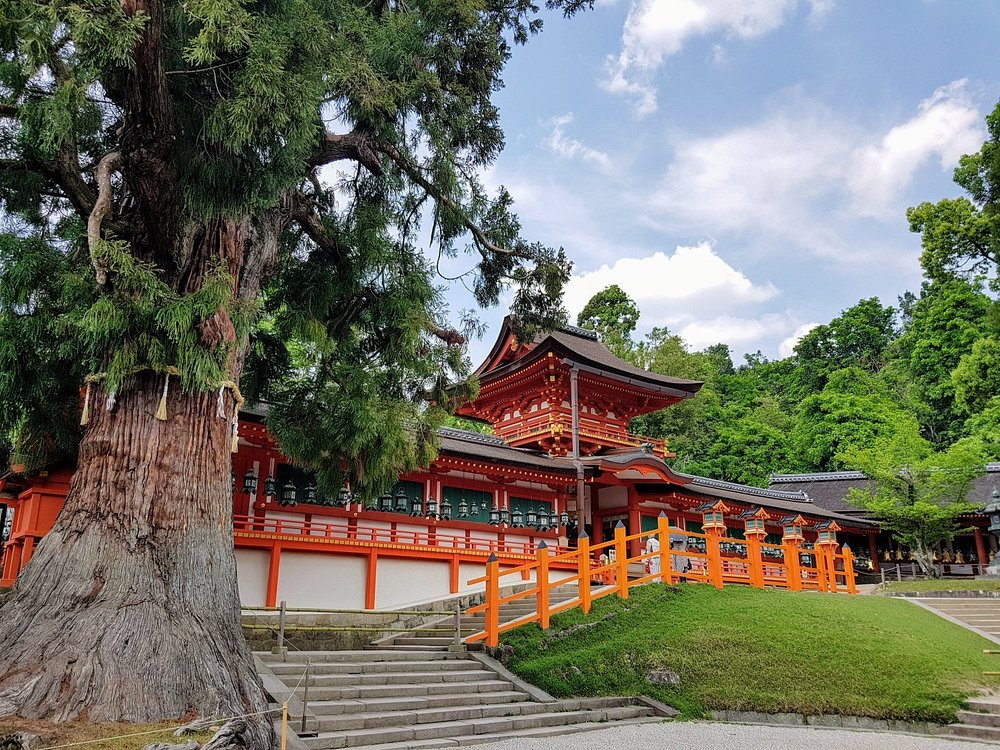
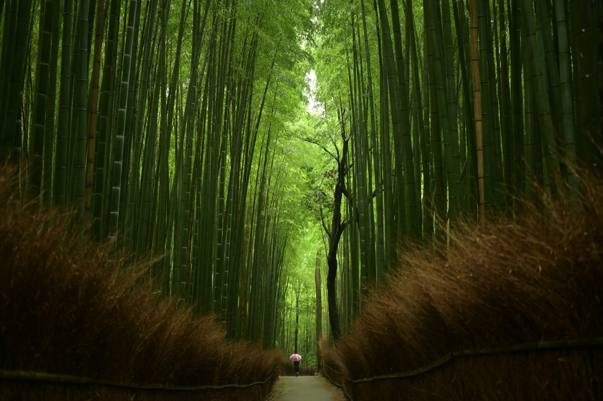

1. Kuil Shinto Kasuga
Kasuga Taisha disebut sebagai salah satu tempat paling suci di seluruh penjuru Jepang.
Sebagai tempat di mana banyak dewa diabadikan, kuil ini menarik para jemaat maupun
para wisatawan yang mencari pengalaman khas Shinto.
Kasuga Taisha dapat diakses dengan mudah menggunakan bus atau taksi dari Stasiun Kintetsu atau JR Nara.
Banyak bus yang beroperasi dari kedua stasiun menuju perhentian bus Kasuga Taisha Honden. Anda juga dapat
berjalan kaki ke sana selama lebih kurang 30 menit dari Stasiun Kintetsu Nara dan 45 menit dari Stasiun JR Nara.
Kasuga Taisha terkenal karena warna-warninya serta pemandangan yang fotogenik. Warna kontras antara merah cerah,
dinding putih, dan atap kayu cemara telah menginspirasi para fotografer selama bertahun-tahun. Kuil ini direnovasi
sekali dalam setiap dua dekade, sebuah tradisi yang terus berlangsung hingga zaman Edo berakhir.

2. Arashiyama
Terletak di daerah barat laut Kyoto, Arashiyama menarik banyak pengunjung karena hutan bambunya yang terkenal di
dunia dan pemandangan indah yang berubah-ubah setiap musim. Daerah ini dipenuhi wihara Buddha, vila kekaisaran
lama, dan situs bersejarah terkenal, kebanyakan di antaranya merupakan Pusaka Nasional, atau telah diakui sebagai
situs Warisan Dunia. Seluruh wilayah ini ditetapkan oleh pemerintah Jepang sebagai Tempat Pemandangan Indah.
Arashiyama mudah diakses dari Stasiun Kyoto dan banyak tempat lain di sekitar Kyoto dengan naik kereta api.
Kota ini dapat dijangkau dengan naik kereta di salah satu dari tiga jalur kereta api: JR Sagano Line yang melayani
Stasiun Saga Arashiyama; Hankyu Line menuju Stasiun Arashiyama; atau Keifuku Randen Tram Line.
Untuk menikmati Arashiyama, Anda harus mengunjunginya dengan santai. Alokasikan waktu setengah hari atau sehari penuh
untuk menikmati pemandangan dan tidak melewati pemandangan indah dengan terburu-buru.

Setiap momen di Jepang adalah sebuah kisah yang layak untuk diceritakan, dan setiap perjalanan membawa kita lebih dekat
kepada keajaiban yang membentuk jiwa negeri Sakura ini. Dengan segala keindahan dan keunikan yang ditawarkannya, Jepang
bukan hanya sekadar tujuan wisata, tetapi juga sebuah pengalaman yang akan menyentuh hati dan memperkaya jiwa kita.
Selamat datang di Jepang, tempat di mana setiap detik menjadi kenangan berharga yang akan terus terukir dalam ingatan.
Penulis : Oatse Rizqy Hendarto